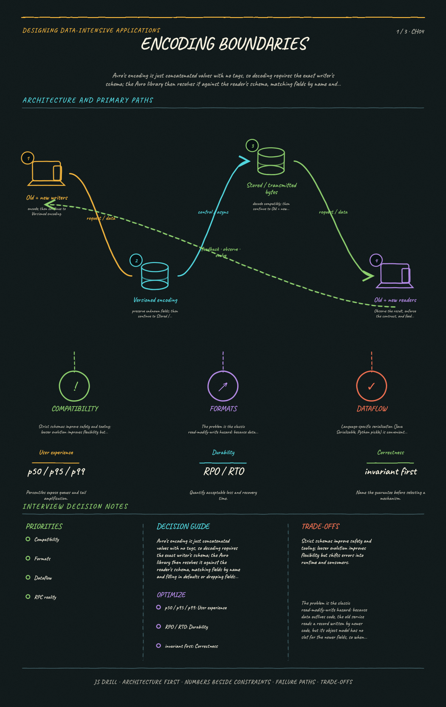

https://frosty110.github.io/js-drill/assets/system-design/infographics/ddia/ch04/encoding-boundaries.pngAvro's encoding is just concatenated values with no tags, so decoding requires the exact writer's schema; the Avro library then resolves it against the reader's schema, matching fields by name and filling in defaults or dropping fields as needed.
How data is encoded (serialized) for storage or transmission and how those encodings let applications evolve. Because old and new code and data coexist during rolling upgrades, formats must preserve backward and forward compatibility across databases, services, and message brokers.
All questions, model answers and diagrams for Encoding and Evolution →